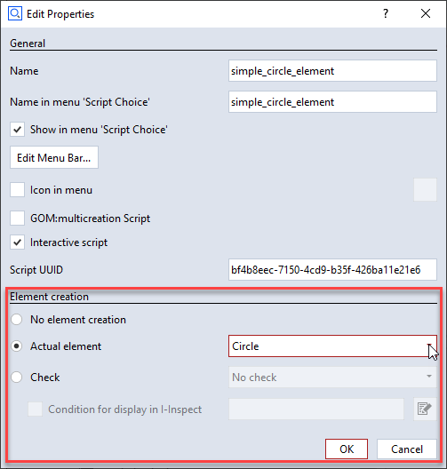

Introduction to scripted elements
This documentation is intended to demonstrate the ability to create parametric elements in the GOM Software using custom python code.
Types
A Script Element is always of a certain geometric type, like a point, surface curve, mesh etc. After creation, it can be used in the project identically to regular actual elements of the same type. Script Elements can depend on other elements, other elements can depend on script elements and they are recalculate if needed.
There are currently two categories of scripted elements:
Scripted actual elements
Point, Circle, Cylinder, …
Scripted checks
Scalar check, surface check, …
Usage
To create a scripted element, the general prodecure is as follows:
Create a script in the script editor or using VS Code.
Select the type of element that is created by this script in the script properties.
Write your script code in a certain structure (see Code structure).
Set element creation type
{kind=link}
You can set different properties to a script in the script editor. For scripted elements, the “Element creation” section provides drop-down menus to select the element type.
Right-click (or double click) on an editable script in the script editor Enable element creation, e.g. “Actual element” Select the desired element type, e.g. “Circle” Each element type requires the script to provide for certain values of specific data types, which are defined in the Scripted Elements API Specification.
Code structure
The script must contain two special functions as entry points for the gom application. One is responsible for creating a user interface, the other one for computing the element data.
# -*- coding: utf-8 -*-
import gom
def dialog(context, params):
# [...]
# show dialog, fill param map, ...
# [...]
return params
def calculation(context, params):
# [...]
# read params, perform calculation, set results
# [...]
return is_computation_valid # (True/False)
The dialog function
The dialog function will be invoked, when the command is firstly run (from the menu or from the script editor) or when editing a created element using “Edit creation parameters”. Most commonly, you would create a script dialog and show it to the user, who can then select the desired parameters for element creation.
The dialog function can initiate a preview calculation of the element to be created in the background.
As a result of dialog, a parameter map that defines the command parameters of the created element is returned.
See also
For implementation details, see the corresponding part of the Scripted Elements API Specification.
The calculation function
The calculation function will be invoked by the application, when the parameter map changes to recalculate necessary element values. This is usually the first time when the dialog function returns or if a preview calculation is triggered.
In case the command parameters contain references to other elements of the project, these elements are regarded as dependencies. Consequently, the calculation is triggered as well when one of the dependencies changed.
This approach is called parametric element creation.
At the end of the calculation, the results have to be set to context.result. This member of the function’s context parameter can hold result data for each project stage. You can get all available project stages with context.stages. The type of result you have to assign for a successful element creation is dependent on which type of element you want to create, e.g. setting (x, y, z) values for a scripted point element.
See also
For implementation details, see the corresponding part of the Scripted Elements API Specification.
Next steps
To understand how Scripted elements work in practice, head over to the next chapter of Scripted Actual Elements.